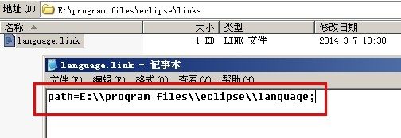
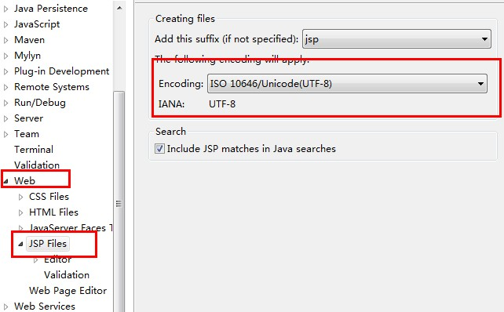
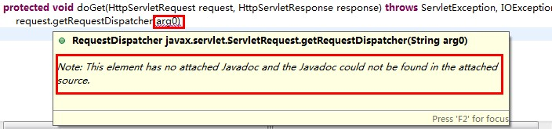
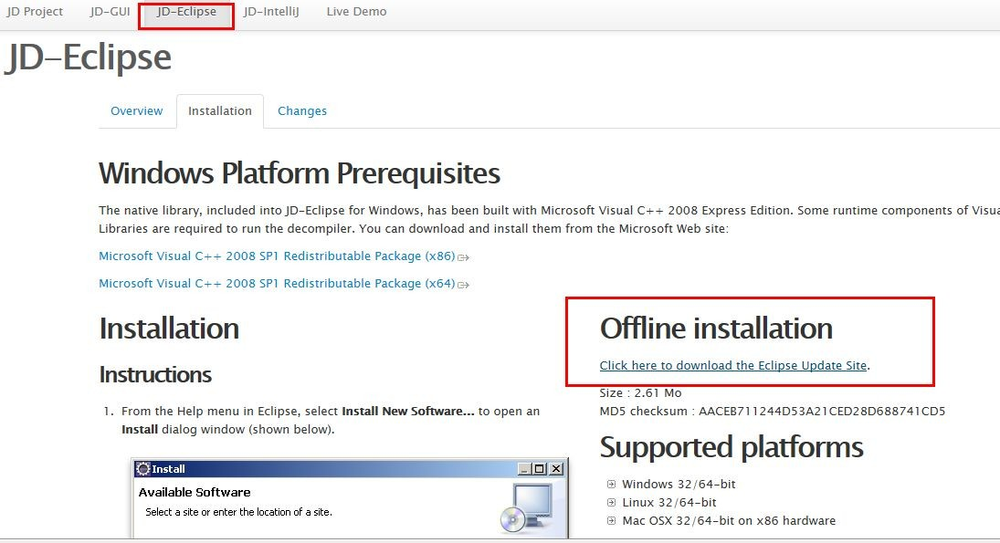

原文连接:https://www.cnblogs.com/wangffeng293/p/11751954.html
用惯了VS，再回过去用Eclipse真是一件痛苦的事。so，在这里记录下使用过程中的一些设置以做备忘。
1、代码自动提示
在我们忘记方法名或者想偷懒时，代码自动提示很管用。不过Eclipse默认是输入"."后才会出现包或类成员的提示，也就意味着我们必须先输入一个完整的类名，提示才能出来；或者每次都按下 alt + / 。如何才能让它每次只要输入字母之后，也能出现提示呢？在这里可以设置：
Window -> Preferences -> Java -> Editor -> Content Assist -> Auto Activation
delay是自动弹出提示框的延时时间，我们可以修改成100毫秒；triggers这里默认是"."，只要加上"abcdefghijklmnopqrstuvwxyz"或者"abcdefghijklmnopqrstuvwxyzABCDEFGHIJKLMNOPQRSTUVWXYZ"，嘿嘿！这下就能做到和VS一样的输入每个字母都能提示啦：
2、插件安装
很多教科书上说到Eclipse的插件安装都是通过 Help -> Install New SoftWare 这种自动检索的方式，操作起来固然是方便，不过当我们不需要某种插件时不太容易找到要删除哪些内容，而且以后Eclipse版本升级的时候，通过这种方式安装过的插件都得再重新装一次。另外一种通过Link链接方式，就可以解决这些问题。
我们以Eclipse的中文汉化包插件为例，先到官方提供的汉化包地址下载一个：http://www.eclipse.org/babel/downloads.php ，注意选好自己的Eclipse版本：
我的版本是Kepler，然后进入下载页面，单击红框框中的链接，即可下载汉化包了：
下载完解压缩后，会有个包含features和plugin目录的eclipse文件夹，把这个eclipse放在我们的Eclipse安装根目录，也就是和eclipse.exe同一级目录下。然后仍然在这一级目录下，新建一个links文件夹，并在该文件夹内，建一个language.link的文本文件。该文本文件的名字是可以任取的，后缀名是.link，而不是.txt哟。好了，最后一步，编辑该文件，在里面写入刚才放入的语言包的地址，并用“\\”表示路径，一定要有path= 这个前缀。

保存文件后，重新打开Eclipse，熟悉的中文界面终于看到了。虽然汉化不完全，不过也够用了不是么。。。如果仍然出现的是英文，说明汉化失败，重新检查下language.link文件中配置的信息是否和汉化包的目录一致。
其它的插件安装方法也是如此，当不需要某个插件时，只需删除存放插件的目录和links目录下相应的link文件，或者改变下link文件里面的路径变成无效路径即可；对Eclipse做高版本升级时，也只需把老版存放插件的目录和links目录复制过去就行了。
3、基本设置
设置代码的字体类型和大小：
Window -> Preferences -> General -> Appearance -> Content Assist -> Colors and Fornts，只需修改 Basic 里面的 Text Font 就可以了
4、设置文本文件及JSP文件编码
Window -> Preferences -> General -> Workspace -> Text file encoding -> Other：
Window -> Preferences -> Web -> JSP Files -> Text file encoding-> Other：

5、设置JDK本地JavaDOC API路径及源码路径
在需要代码提示时，可能经常会遇到这样的情况：
还都生成的是无意义的变量名，这样可能会对含有相同类型的变量参数的调用顺序造成干扰；
这种问题，我们把JDK或者相应Jar包的源码导入进去就能避免了：
Window -> Preferences -> Java -> Installed JREs -> Edit：
选中设置好的JRE目录，编辑，然后全选 JRE system libraries 下的所有Jar包，点击右边的 Source Attachment；
External location 下，选中JDK安装目录下的 src.zip 文件，一路OK 下来。
设置完，我们再来看看，幸福来的好突然有木有！
6、设置Servlet源码或其它Jar包源码
当我们使用非JDK，比如Servlet的包或者类时，这玩意又出来了，欲哭无泪的赶脚。。。

上一步已经设置过了JDK的源码或JavaDoc路径，为啥现在又出来了呢？其实这个不难理解，因为我们使用到的类的源码并不在JDK的源码包中。
仔细看，我们会发现这些Jar包其实都在Tomcat根目录下的lib文件夹中，但是翻遍了Tomcat目录也没有相应的jar或zip文件呀。既然本地没有，那就去官网上找找：
http://tomcat.apache.org/download-70.cgi 这里有Tomcat的安装包和源码包；
可以自定义一个专门用于存放JavaSource和JavaDoc的文件夹，把下载文件放到该目录下，
然后再切换到Eclipse下，选中没有代码提示的类或者函数， 按下F3，点击 Change Attached Source：
选择我们刚才下载好的tomcat源码文件，一路OK。
然后再回过头看看我们的代码提示，友好多了：
其它Jar包源码的设置方式也一样。
7、HTML、JavaScript、JSP文件代码自动提示
第二点我们说到了Java文件中的代码自动提示，其它类型的文件比如HTML、JavaScript、JSP如果也能提供提示那不是更爽了？有了第二点设置的基础，其实这些设置都是一样的。先来看JavaScript：
Window -> Preferences -> JavaScript-> Editor -> Content Assist -> Auto-Activation
HTML：
Window -> Preferences -> Web -> HTML Files -> Editor -> Content Assist -> Auto-Activation
保存后，我们再来输入看看，感觉真是不错呀：
八、反编译插件 JD-Eclipse
无论是开发还是调试，反编译必不可少，每次都用jd-gui打开去看，多麻烦，干脆配置下JD插件，自动关联.class：
先从 http://jd.benow.ca/ 上下载离线安装包 jdeclipse_update_site.zip，解压缩后把 features、plugins 这2个文件夹复制到 新建文件夹 jdeclipse，然后把 jdeclipse 文件夹整个复制到Eclipse根目录的dropins文件夹下，重启Eclipse即可。这种方式是不是比建link文件更方便了？

打开Eclipse，Window -> Preferences -> General - > Editors ，把 .class 文件设置关联成 jd插件的editor
九、properties文件中文乱码设置
Eclipse打开properties文件时，中文会显示乱码，这是因为properties文件默认编码方式是iso8859-1，将其修改为utf-8后，就可以正常显示了：
Window -> Preferences -> General -> Content Types -> Text -> Java Properties File -> UTF-8 -> Update -> OK